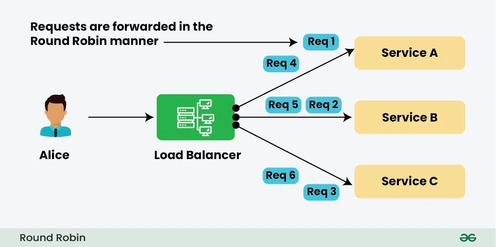
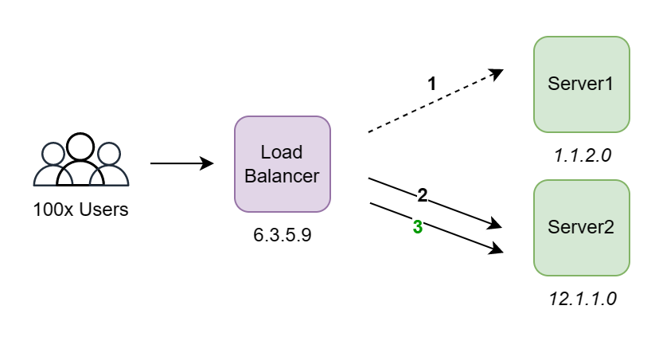
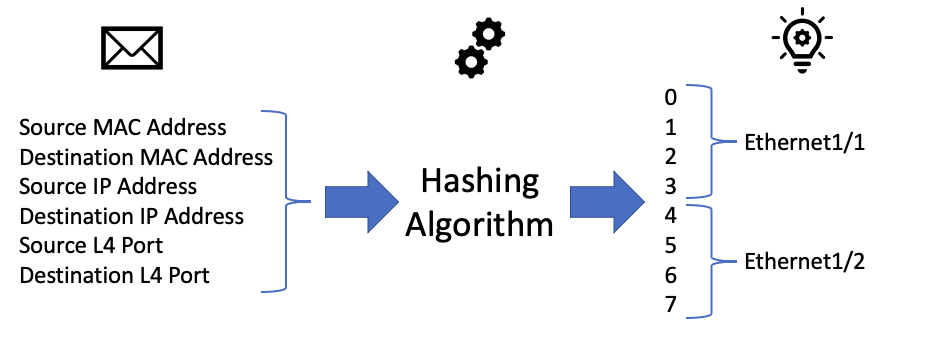
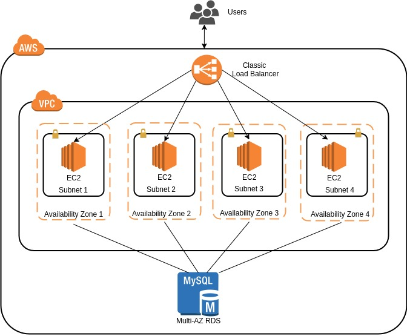
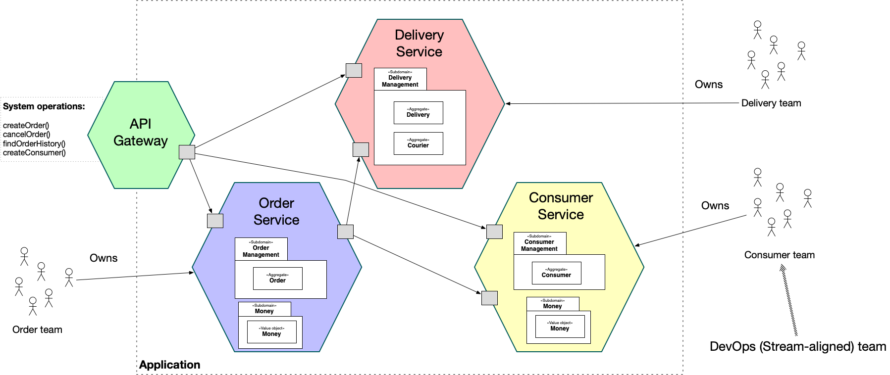

Request Routing Algorithms in AWS Load Balancers
Round Robin

is a simple and widely used algorithm implemented in Application Load Balancers (ALB) and Classic Load Balancers (CLB - TCP). It routes each incoming request to the next available target in a circular order. This method works best when all targets have similar processing power and response time, as it doesn't account for load or performance differences between instances.
Least Outstanding Requests (LOR)

is available in CLB (HTTP/HTTPS) and optionally in ALB. It directs traffic to the target that currently has the fewest active or pending requests. This algorithm dynamically balances the load, making it particularly useful in environments where application targets handle requests with varying durations or resource usage, improving responsiveness and throughput.
Flow Hash (5-tuple Hashing)

is employed by Network Load Balancers (NLB) and Gateway Load Balancers (GWLB). It uses a consistent hashing mechanism based on five parameters—source IP, source port, destination IP, destination port, and protocol. This ensures that packets from a specific client connection always go to the same backend target, which is essential for maintaining stateful TCP or UDP sessions without requiring sticky session logic.
Sticky Sessions (Session Affinity)

is a mechanism supported by both CLB and ALB to bind a user session to a specific target for the duration of a session. ALB achieves this through application-based cookies, while CLB uses source IP affinity. This is particularly beneficial for applications that store session data locally on an instance, ensuring continuity for end-users even during multiple subsequent requests.
AWS Use Cases for ELB
1. Web Application Load Balancing

To enable scalable and highly available web application hosting on AWS, you need to deploy your application on EC2 instances and create an Amazon Machine Image (AMI) as a template for replication. An Elastic Load Balancer (ELB) is configured to distribute incoming traffic evenly across multiple instances across different availability zones, ensuring fault tolerance and load distribution. An Auto Scaling group is then set up to automatically adjust the number of running instances based on real-time demand and CPU utilization metrics, allowing the system to scale out during high traffic and scale in to save costs when demand decreases. Continuous monitoring of performance metrics such as CPU usage, response time, and instance health is essential to maintain optimal operation and responsiveness. This combination of load balancing and auto scaling ensures the application can efficiently handle varying traffic loads while optimizing resource usage and cost.
2. Microservices Architecture

This tutorial outlines the process of building and deploying dockerized microservices on Amazon ECS using the Fargate launch type, which eliminates the need to manage underlying EC2 instances. Developers begin by creating an ECS cluster to host their services, followed by building Docker images for each microservice and pushing them to a container registry like ECR or Docker Hub. Each microservice is defined using an ECS task definition that specifies container configurations and resource requirements. ECS services are then created to manage and maintain the desired number of running containers. To achieve load balancing and intelligent routing, an Application Load Balancer (ALB) is integrated, with separate target groups for each microservice. Listeners and routing rules are configured to direct incoming requests to the appropriate services based on path or domain. The ECS tasks are registered with these target groups to receive traffic. The deployment process is managed via the AWS CLI, allowing automation and streamlined configuration of ECS, ECR, and ELB components. By combining ECS, Fargate, and ALB, this approach provides a scalable, manageable, and highly available solution for deploying microservices in production-ready environments.
{kind=link}
{kind=link}